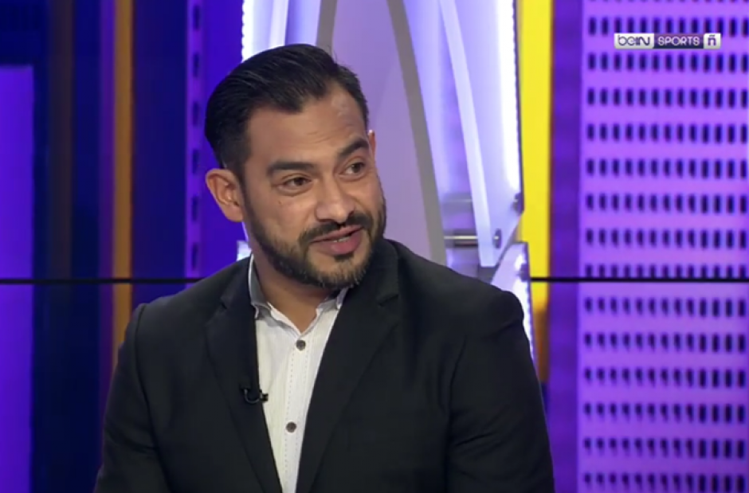
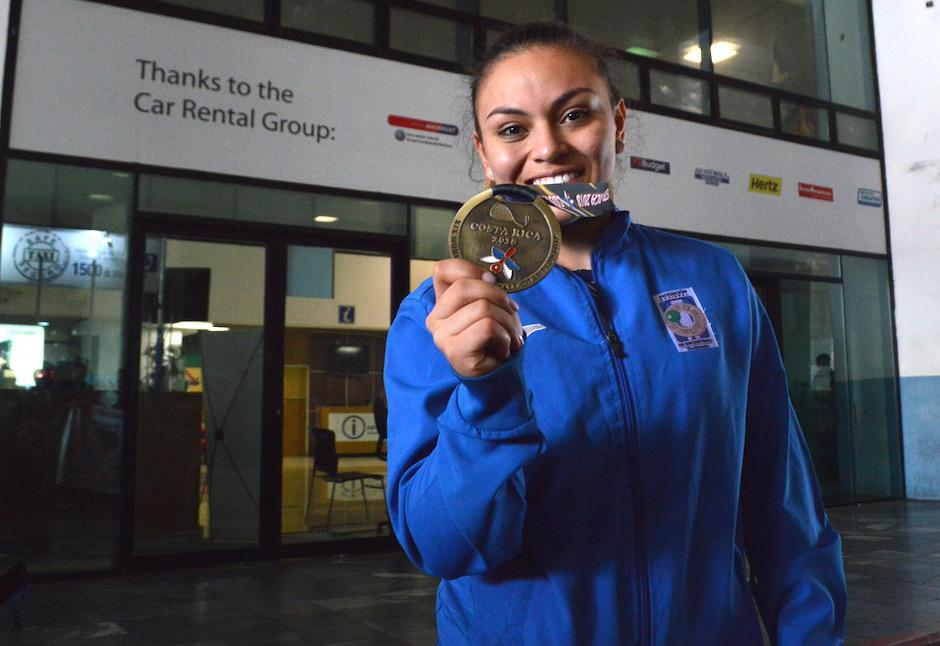

Nacimiento: 14 de junio de 1991, San Cristóbal, Alta Verapaz.
El 4 de agosto de 2012 Erick ganó la medalla de plata en los Juegos Olímpicos de Londres,
dándole a Guatemala la primera medalla olímpica de toda su historia.
Primer lugar en el campeonato Nacional de Marcha de Pontevedra, España 2011.
Tercer lugar de la Copa Lugano, en Suiza 2012.

Personaje #2
Carlos Humberto Ruiz Gutiérrez "El Pescadito Ruiz"
Especialidad: Futbol.
Nacimiento: 15 de septiembre de 1979, Ciudad de Guatemala.
Ruiz fue partes de las filas de Club Social y Deportivo CSD Municipal en 1995 y donde
permaneció hasta el 2002. Durante esa época anotó al menos 25 goles, posteriormente, su
carrera despegó hacia dos clubes deportivos internacionales.

Personaje #3
Ana Gabriela Martínez
2 de agosto de 1999.
Especialidad: Ráquetbol.
Martínez demostró su hegemonía en el evento juvenil, ganando 8 títulos consecutivos entre 2009 y 2016. Desde el 2011 también compite en eventos del ciclo olímpico representando a Guatemala, donde ha ganado múltiples medallas.